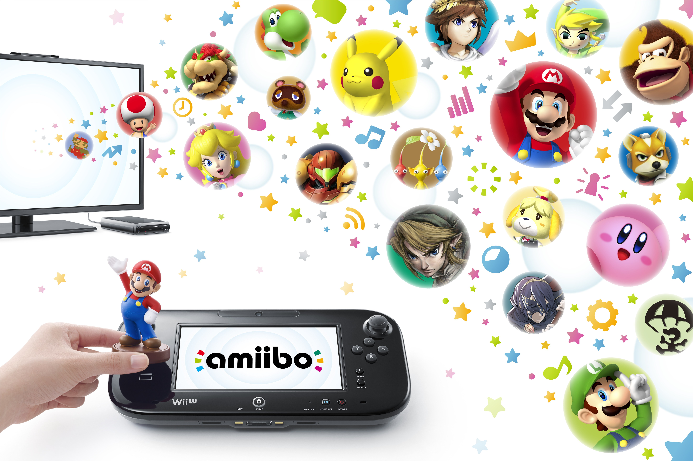

Amiibo is a toys-to-life platform created by Nintendo which was first introduced in November 2014. Amiibo figurines used various characters from Nintendo’s catalogue of games such as Mario, The Legend of Zelda, Kirby, and Animal Crossing. Amiibo connected to the Wii U, Nintendo 3DS, and Nintendo Switch systems via a wireless protocol. Amiibo served as both collectibles and game-enhancers. The popularity of amiibo slowly went down over the years. Not as much game software supports the figurines and they are merely sold more as collectibles rather than a way to interact and unlock various things in your games.